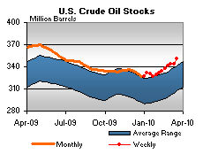

Released on March 24 2010
(Next Release on March 31, 2010)
Fourth Quarter Energy Earnings Vary Across Business Segments
During the fourth quarter of 2009 (4Q09), earnings of oil and natural gas producers increased significantly above the levels seen a year earlier. However, earnings of refiner/marketers and oil field companies (oil field companies provide drilling and other services to producers) fell sharply in 4Q09 compared to year earlier levels. These results are drawn from quarterly EIA reporting on the financial performance of energy companies (see the Financial News for Major Energy Companies, Fourth Quarter 2009 and the Financial News for Independent Energy Companies, Fourth Quarter 2009 that together represent about half of U.S. oil and gas production and the majority of U.S. refining.
Based on data available at the time of the publication of the quarterly reports, imported crude oil prices paid by U.S. refiners averaged $73.04 per barrel in Q409, up by more than one-third from the average of $52.66 per barrel over the fourth quarter of 2008 (Q408). (All prices and price changes in this report are denoted in constant Q409 dollars.) Natural gas wellhead prices averaged $3.90 per thousand cubic feet (Mcf) in Q409, compared to the average of $6.10 per Mcf in Q408.
The large integrated and large independent producers in EIA’s Financial Reporting System survey reported earnings of $18.7 billion in Q409 for the oil and gas production segment, up from $3.4 billion in Q408 (Figure 1), and slightly above the fourth-quarter average for 2004-2008. Similarly, smaller independent producers reported earnings of $0.2 billion, up from a loss of $3.9 billion in Q408 but below the fourth quarter average for 2004-2007 of $0.5 billion. Reported increases in net income of the majors and independent producers reflected higher crude oil prices coupled with increased oil and natural gas production levels.
In the refining and marketing segment, which includes the operations of large integrated and large independent refiners, earnings dropped to -$2.2 billion in Q409 from $2.6 billion in Q408 (Figure 1). Specifically, domestic refining/marketing operations lost $2.0 billion in Q409 while foreign operations lost $0.1 billion, as refining margins generally declined.
The majors’ upstream capital expenditures declined relative to Q408 (Figure 2) but still were higher than the fourth quarter average for 2004-2008. In particular, worldwide oil and gas production capital expenditures fell 28 percent relative to Q408, but increased 7 percent relative to the fourth quarter average for 2004-2008. For the last 5 quarters (Q408-Q409), worldwide refining/marketing net income has averaged about 80 percent below the pertinent 5-year historical average for that quarter. This has resulted in reduced worldwide refining/marketing investment by the majors. However, the $1.4 billion decline in investment was dwarfed by the $4.7 billion decline in net income (Q409 relative to Q408) and was 8 percent higher than the fourth quarter average for 2004-2008.
Reduced capital expenditures were accompanied by higher oil and natural gas production in Q409 than a year earlier and than the fourth-quarter average for 2004-2008. Throughout 2009, the reporting companies’ domestic and foreign oil and natural gas production all increased compared to the same quarter a year earlier, something that has happened at no other time since the fourth quarter of 2001. The increase in production, despite the sharp drop in capital expenditures, resulted from the lagged effects of higher capital expenditures in previous quarters, during a period of historically high prices.
Net income of selected oil field companies dropped 43 percent from Q408, to $2.3 billion (Figure 3) and by 31 percent relative to the fourth quarter average over 2004-2008. The decline reflected lower rig counts in Q409, particularly gas rigs which fell 50 percent relative to Q408 due to the sharp decline in natural gas prices.
U.S. Average Gasoline and Diesel Prices Still Rising
For the fifth week in a row, the U.S. average price for regular gasoline moved up, increasing three cents to $2.82 per gallon. The price was $0.86 above the average a year ago and the cumulative increase during the past five weeks totaled $0.21 per gallon. The average on the East Coast inched up one cent to $2.79 per gallon. The largest increase occurred in the Midwest, where the average jumped nearly seven cents to $2.81 per gallon. The smallest increase took place on the Gulf Coast, where the average increased under a penny to $2.69 per gallon. The average in the Rocky Mountains rose nearly four cents to $2.77 per gallon. The West Coast price rose about three cents to $3.03 per gallon and the California average increased three cents to $3.09 per gallon.
The U.S. average price for diesel fuel also increased for the fifth consecutive week. The average moved up over two cents to $2.95 per gallon, $0.86 above the price a year ago. During the past five weeks, the cumulative increase has been 19 cents. The East Coast, Midwest, and Rocky Mountain prices each increased by about three cents to settle at $2.97 per gallon, $2.92 per gallon, and $2.95 per gallon, respectively. The Gulf Coast average went up the least, increasing less than a penny to $2.90 per gallon. The average moved up two cents to $3.03 per gallon on the West Coast and the California price increased less than a penny to $3.07 per gallon.
Propane Inventories Remain Flat
Inventories of propane built only slightly last week, leaving total U.S. stocks at 25.1 million barrels. There was mixed regional activity as the East Coast inventories fell by 0.4 million barrels and the Midwest regional stocks grew by 0.3 million barrels. The Gulf Coast region added 0.1 million barrels of inventory, while the Rocky Mountain/West Coast region fell slightly. Propylene non-fuel use inventories increased their share of total propane/propylene stocks from 8.7 percent to 9.0 percent.
These prices come from the last survey done for the 2009/10 winter heating season. Weekly retail prices for heating oil and propane will restart for the 2010/11 season beginning in October 2010.
Text from the previous editions of “This Week In Petroleum” is now accessible through a link at the top right-hand corner of this page.
| Retail Prices (Cents Per Gallon) | |||||||
| Retail Data | Changes From | Retail Data | Changes From | ||||
| 03/22/10 | Week | Year | 03/22/10 | Week | Year | ||
| Gasoline | 281.9 | Diesel Fuel | 294.6 | ||||
| Spot Prices (Cents Per Gallon*) | |||||||||||||||||||||||||||||||||||
|
|||||||||||||||||||||||||||||||||||
| *Note: Crude Oil WTI Price in Dollars per Barrel. | |||||||||||||||||||||||||||||||||||
| Stocks (Million Barrels) | |||||||
|  | |||||||
| Stocks Data | Changes From | Stocks Data | Changes From | ||||
| 03/19/10 | Week | Year | 03/19/10 | Week | Year | ||
| Crude Oil | 351.3 | Distillate | 145.7 | ||||
| Gasoline | 224.6 | Propane | 25.143 | ||||